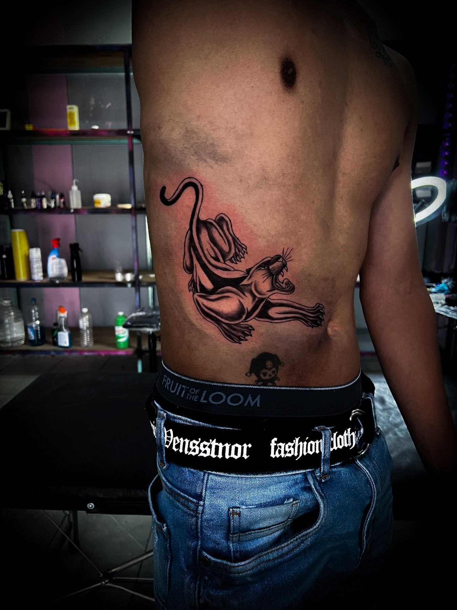
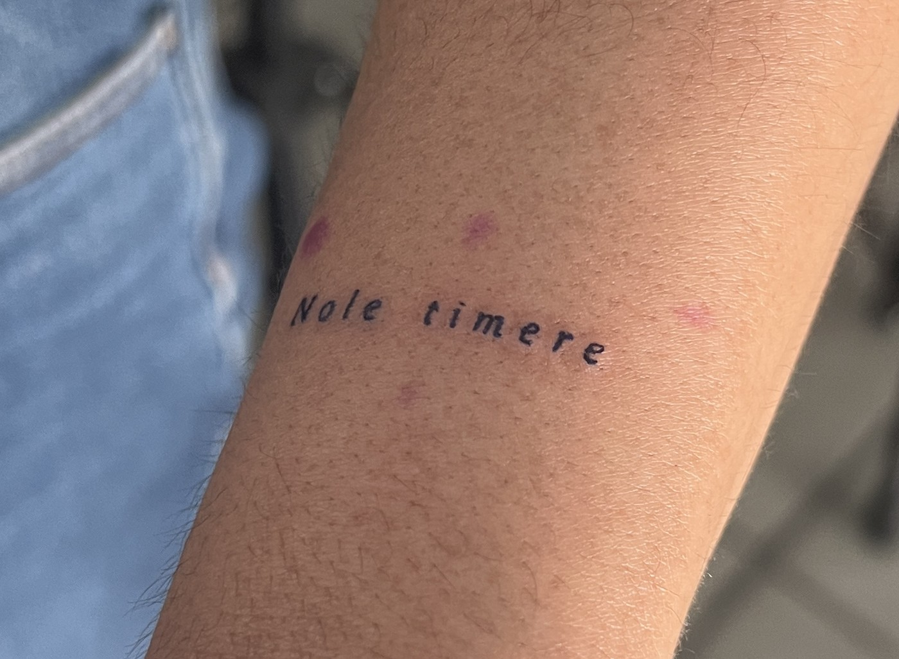
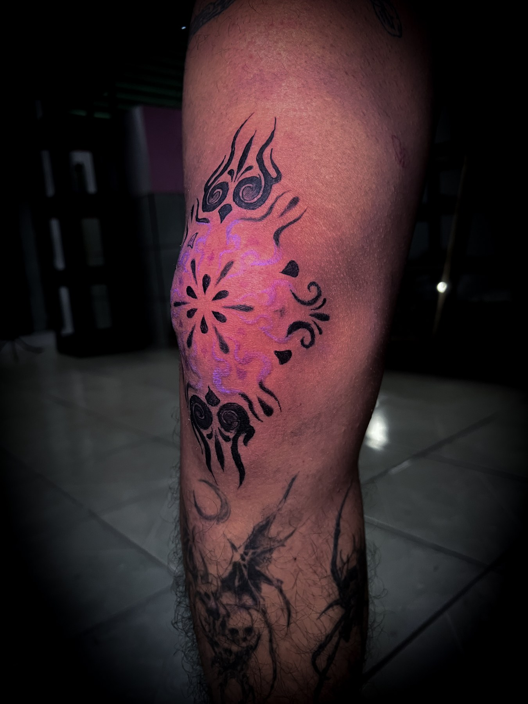
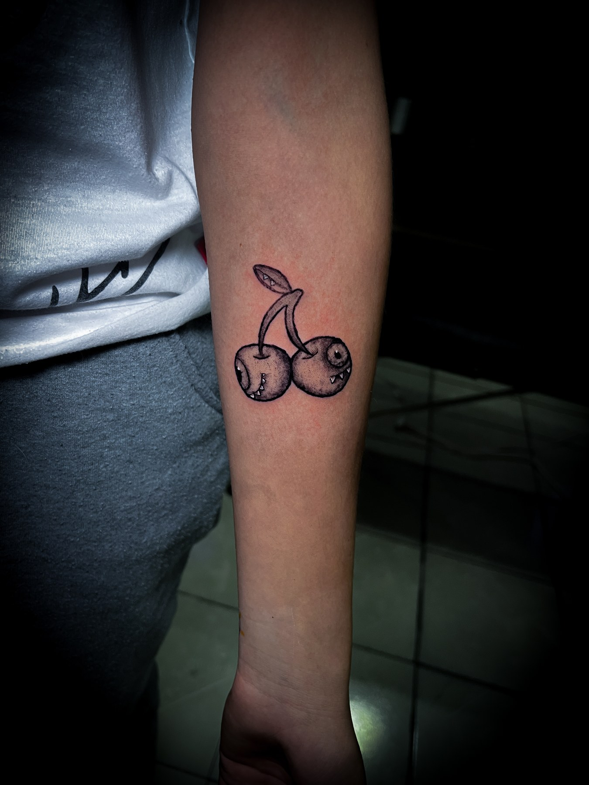
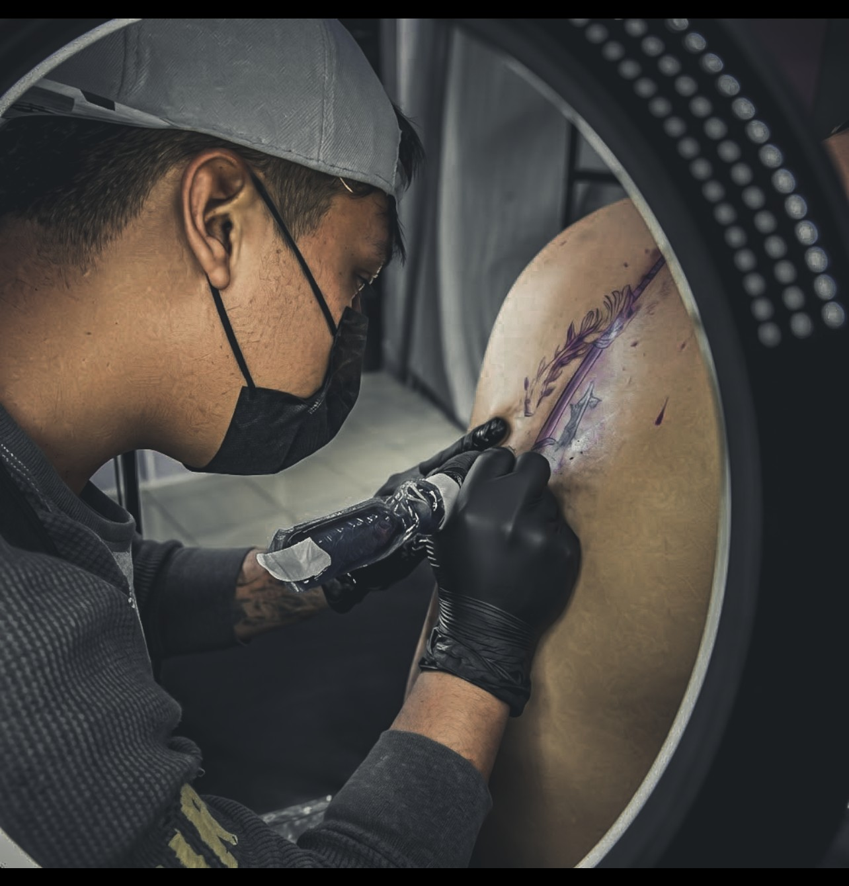

01BLACKWORKTATUAJES CON IDENTIDAD · XICOHTZINCO, TLAX.
QUE TU PIEL
HABLE POR TI.
Diseños personalizados con carácter. Cada pieza empieza con una idea y termina siendo solo tuya.
HECHO A MANO. HECHO PARA DURAR.
GRM
001 / ORIGINAL
001 / ORIGINAL
✳
CUSTOM TATTOO · EST. 2024
TU HISTORIA
EN TINTA.
EN TINTA.
01 — 03
ALETZ GRM ● TATUADOR
BLACKWORK✳FINE LINE✳DISEÑO PERSONALIZADO✳BLACKWORK✳FINE LINE✳DISEÑO PERSONALIZADO✳
01 / PORTAFOLIO
TINTA QUE
DEJA HUELLA.
Una selección de piezas originales.
Cada tatuaje, una historia distinta.

02FINE LINE
03ORNAMENTAL
04DISEÑO ORIGINALUna selección de tatuajes y diseños originales de Aletz Grm.
02 / ESPECIALIDADES
MI TINTA.
TU IDEA.
Platicamos tu concepto y lo llevamos a un diseño que tenga sentido para ti.
Cuéntame tu idea ↗
ALETZ GRMTATTOO ARTIST
03 / DETRÁS DE LA TINTA
SOY ALETZ.
HAGO TATUAJES.
Me gusta crear piezas con intención: escuchar lo que imaginas, encontrar la forma y cuidar cada detalle del proceso. Si tienes una idea, la trabajamos juntos.
Aletz Grm — tatuador
Hablemos de tu proyecto ↗04 / INVERSIÓN
EMPIEZA CON
UNA IDEA.
Diseños desde
$600 MXN
El precio final depende del tamaño, detalle y zona. Cuéntame tu idea para cotizarla.
Pedir cotización ↗05 / ENCUÉNTRAME
ESTAMOS EN
XICOHTZINCO.
Atiendo en Xicohtzinco, Tlaxcala. Usa el enlace para consultar el punto y las indicaciones en Google Maps.
Xicohtzinco, TlaxcalaMéxico · Ubicación del estudio
06 / HAGAMOS ALGO TUYO
¿QUÉ IDEA
TRAES?
Cuéntame qué tienes en mente. Completa una solicitud rápida y tu mensaje llegará organizado a WhatsApp.
GRM / STUDIO
Tu próxima pieza
empieza aquí.